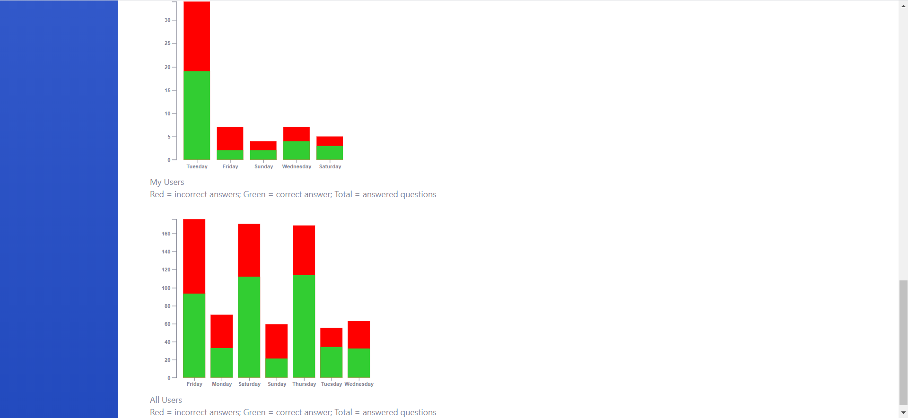
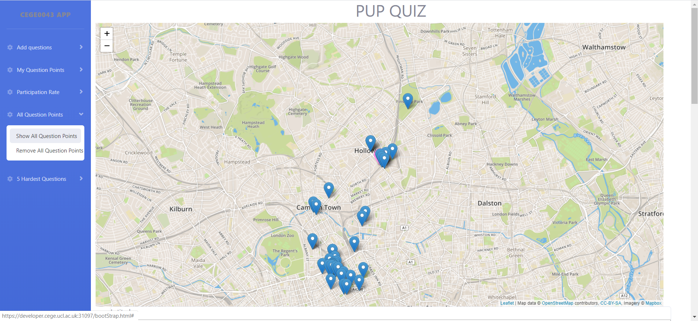
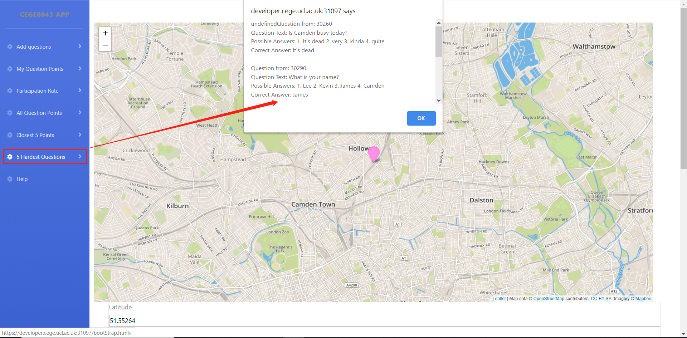

Firstly, confirm that you have connected to UCL Wi-Fi and then use your laptop to open the browser and enter the following link: https://developer.cege.ucl.ac.uk:31097/bootStrap.html. Then you will see the following interface on your screen (Figure 1).
Figure 1: All question setting functions are displayed on the left in the form of a menu, the pink point in the middle of the map is the user's current location
First, scroll the web page to the bottom of the map and you will see a form. Select the question point you want to set on the map and click the point. The web page will automatically help you enter the latitude and longitude coordinates of the point (Figure 2).
If the correct answer number you enter is not within the integer of 1 to 4, the system will remind you to enter 1, 2, 3 or 4.(Figure 3).
Figure 2: Fill in latitude and longitude automatically
Figure 3: Correct answer number check
After clicking the My question Points sub-menu 'Show Question Points', the question points set by user will be displayed on the map with default blue points. These points can be removed by clicking on the 'Remove Question Points'(Figure 4).
Figure 4: The Question Points that the user has set (Default blue points)
Clicking the sub-menu 'My User Participation Rate' and 'All User Participation Rate' of Participation Rate, The participation rate will display at the bottom of the webpage(Figure 5).

Figure 5: Participation Rate (Red: incorrect answer; Green: correct answer)
After clicking the All question Points sub-menu 'Show All Question Points', the question points set by all users in the last week will be displayed on the map with default blue points. These points can be removed by clicking on the 'Remove All Question Points'(Figure 6).

Figure 6: The Question Points from all users (Default blue points)
After clicking the Closest 5 Points sub-menu 'Show Closest 5 Points', the 5 closest points will be displayed on the map with orange points. These points can be removed by clicking on the 'Remove Closest 5 Points'(Figure 7).

Figure 7: The closest 5 question points: Pink point(User Location); Orange points: (Closest 5 Points)
After clicking the '5 Hardest Questions', the 5 most difficult questions information include port_id, question text, possible answer and correct answer will be shown in alert window(Figure 8).

Figure 8: The alert window shows the 5 most difficult questions